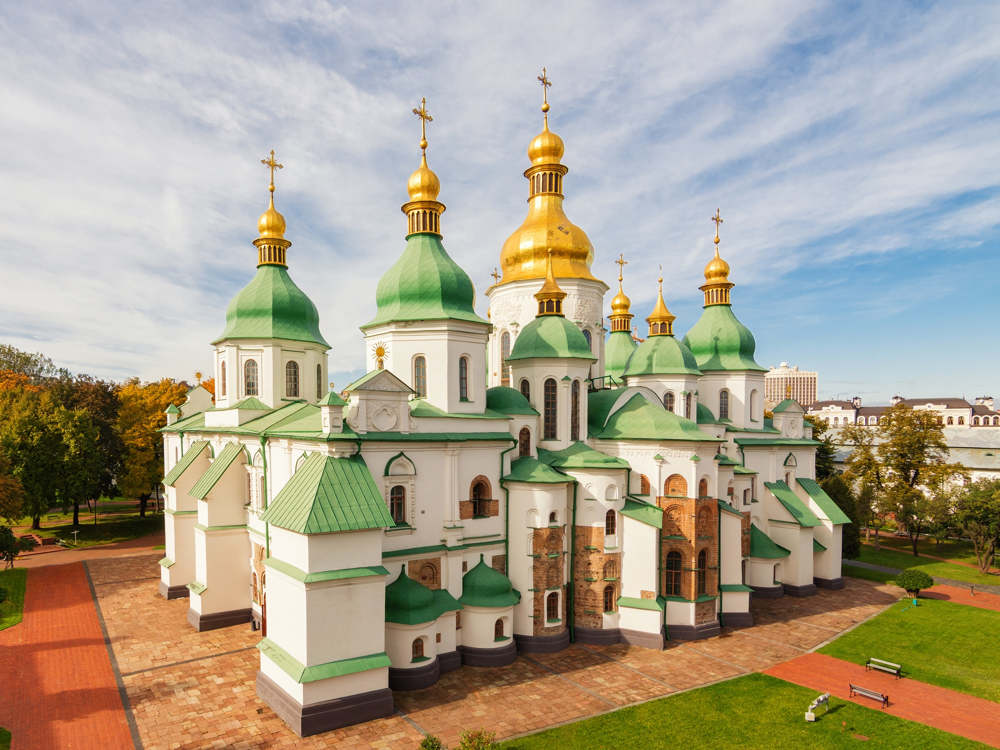
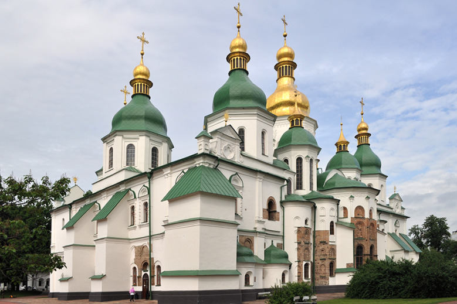
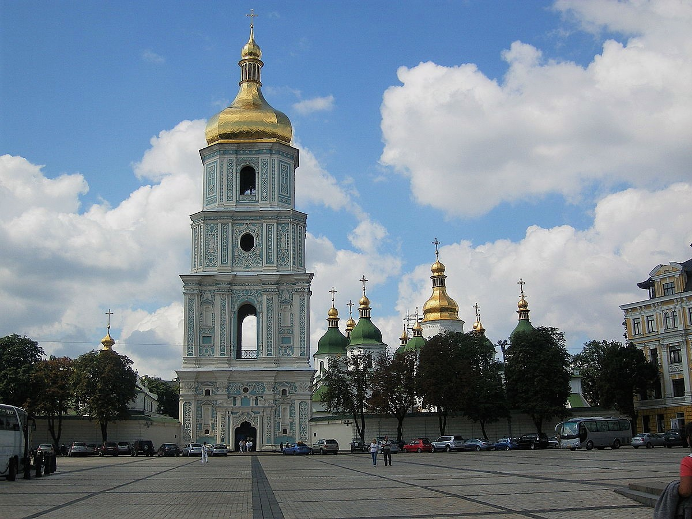
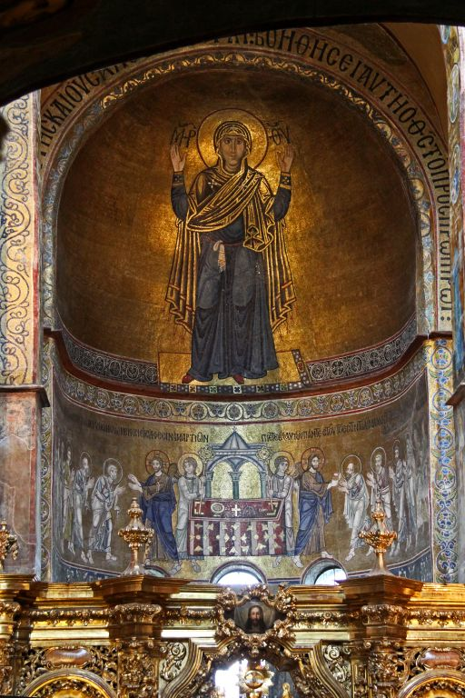
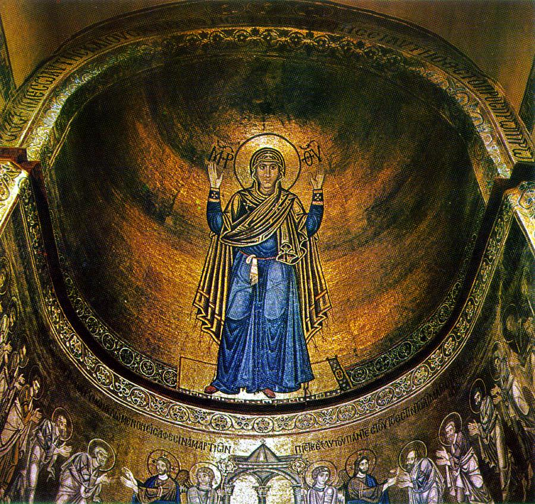
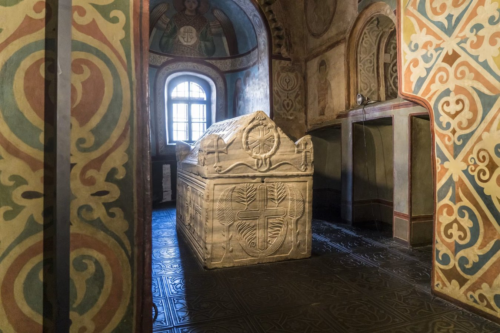

Софія
Київська
Собор, у якому тисячу років зберігається пам’ять про Київську Русь: у камені, мозаїках і голосах людей.
Мамчур Аліна · 7-Б

Храм для
нової столиці
Собор постав у Києві в XI столітті, за князювання Ярослава Мудрого. Його будували як головний християнський храм столиці Русі — величний знак сили, віри й освіченості держави.
Назва «Софія» означає «Премудрість Божа». У роботі над храмом поєдналися знання місцевих майстрів і візантійські мистецькі традиції.

Куполи,
що ведуть угору
Первісний собор був хрестово-купольним храмом із п’ятьма навами. Його багатокупольний силует створював урочистий ритм, а простір усередині спрямовував погляд до центрального купола.
- Центральний купол підноситься над храмом.
- Арки, стовпи й галереї ділять простір на виразні частини.
- Зовнішній вигляд змінювався: у XVII–XVIII століттях собор набув рис українського бароко.

Як храм
впускав світло?
У давньому храмі світло було частиною задуму. Вузькі аркові віконні прорізи у товстих стінах пропускали сонячні промені всередину й підкреслювали висоту простору.
На відміну від сучасних великих скляних вікон, середньовічні прорізи були невеликими. У напівтемряві інтер’єру особливо виразно мерехтіли золоті смальтові мозаїки.
Аркові прорізиТовсті стіниСвітло на мозаїках
Стіни, що
розповідають
Усередині збереглися унікальні мозаїки й фрески XI століття. Найвідоміший образ — Богородиця Оранта в головній апсиді, піднята в молитві за людей.
Мозаїку складали з маленьких кубиків смальти й каменю. Фрески наносили на вологу штукатурку — так фарби ставали частиною стіни.

Не лише
місце молитви
Софія була важливим осередком державного та культурного життя. Тут приймали послів, укладали літописи, навчали й ухвалювали важливі рішення.
За Ярослава Мудрого постає головний храм Києва.
У соборі поховали князя Ярослава Мудрого; його саркофаг зберігся донині.
Формується бароковий монастирський ансамбль довкола собору.
Комплекс внесено до Списку всесвітньої спадщини ЮНЕСКО.

Софія на екрані
Відео за посиланням, наданим для презентації
Спадщина,
яку бережемо
«Софія Київська — це не тільки давній храм. Це жива пам’ять про майстерність, знання й історію України».
Її мозаїки, фрески та архітектура допомагають нам уявити Київ тисячу років тому. Збереження цієї пам’ятки — відповідальність перед майбутніми поколіннями.